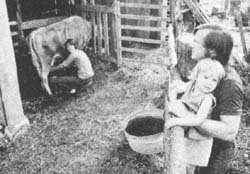
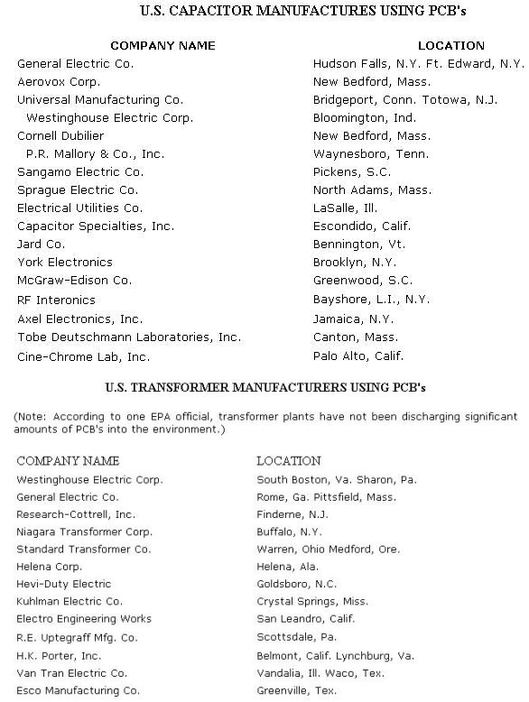
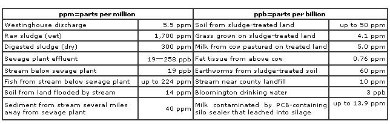

We've all heard the story. "There's no need for restrictive regulations, " say the makers of toxic food additives, herbicides, pesticides, and industrial chemicals. "We can police ourselves. Just give us a chance. " And so Red Dye No. 2 stays on the market, defoliants like 2,4,5-T and 2,4-D remain in use, and highly poisonous chemicals such as polychlorinated biphenyls (PCB 's) continue to be dumped into water-ways and sewer lines by companies like General Electric and Westinghouse. Meanwhile, government agencies - hampered by poorly written (or non-existent) laws - are powerless, so they say, to act.
Which means that - at this stage of the game, at least - if people are to be protected from poisons in their daily lives,people must protect themselves ... by not eating processed foods, by not using herbicides and pesticides, and by living in a part of the country where the air and soil and water are not tainted by pollutants. But are there any such areas left?
Ron and Sara Nehrig moped to Bloomington, Indiana three years ago to live what they thought would be healthful, protected lives. On a small farmstead, the Nehrigs raised most of their own food, built up the soil without chemicals, and - until not long ago - lived the life they'd planned. But then something happened to change their lives ... something frightening. Something that could just as easily have happened to you.
This is the Nehrigs'story.
For the last three years, Sara and I and our three-year-old daughter, Rachel, have lived on a tiny farmstead outside the city of Bloomington, Indiana. We own three and a half acres and lease (in return for milk from our cow, Blossom) two additional acres from a neighbor.
We've been awfully busy these past three years. Busy putting up fencing, planting trees, erecting a log home building a chickenhouse and a cowshed, and doing the jillion other things that have to be done when you start a homestead from the ground up.
In the summer, we grow hay and corn for our cow, raise sorghum to cook down into molasses, and tend a half-acre garden that provides us with 85 to 90% of our food.
And we usually get around to working on the house during the winter. All year round we make shoes, custom build hardwood furniture and looms, and do welding for friends, among other activities. Despite our constant efforts to get caught up, however, the list of things that we want and need to do seems to grow longer every day.
It's a busy way to live ... but an enjoyable one. For, regardless of how much work we have to do, we always seem to have plenty of time to visit with friends and just relax. We wouldn't trade life on the farm (even a tiny one) for anything.
We decided long ago, you see, that we'd just as soon have as little to do with the hustle and bustle of the "outside world" as possible. College-and previous jobs-had made it abundantly clear to us that we weren't made to slave under a "boss", or to put up with the endless frustrations that are part and parcel of a nine-to-five job.
I find that I'm much more satisfied working with my hands-creating something I can look at and feel and love-than I am sitting in an office (or classroom) all day. Sara who hand-sews light, comfortable shoes that actually fit people's feet-knows the satisfaction of working with her hands too. That's why we moved to our little farmstead ... and why we don't want to move away.
Our concern for quality in the things we make and do carries over to the land that Sara and I own. We aren't content merely to keep our little place as it is ... we're always looking for ways to improve it.
A year ago, we knew we had to do something to enrich the soil in our garden, cornfield, and pasture. From past experience, though, we knew we couldn't carry a large enough quantity of grass clippings and cornhusks from town to do much good for our garden ... let alone for the pasture, which definitely needed a rich (but non-chemical) fertilizer.
After giving it a lot of thought, we decided to fertilize our soil with sludge from a sewage treatment plant about five miles away. I'd spent a fair amount of time researching the use of solid wastes on farmland and could see nothing wrong with the idea ... but to put my mind at ease I called the city engineer in charge of the local treatment facility and asked him about the presence of heavy metals (zinc, cadmium, etc.) and other pollutants (such as pesticides) in the digested sludge. The man assured me that sewage solids were safe to use as fertilizer- that, in fact, they were being used across the country with no ill effects-and that Bloomington's sludge was free of heavy metals and other harmful agents.
From what we could determine, then, sludge appeared to be safe to use, rich in soil nutrients, plentiful, and low-cost (it was free for the hauling). In short, it seemed to be the perfect "soil conditioner"!
When a friend of ours offered us the free use of his dump truck so we could haul our "fertilizer" home, we nearly jumped for joy!
So in November of 1975 we trucked home 100 tons of solid wastes from the Bloomington sewage treatment facility. And we spread it everywhere: on the pasture, the garden, and the cornfield. And when we were done, we felt elated ... for we just knew that-come springtime-everything on our little homestead would simply grow like crazy.
What we didn't know was that-a week after we covered our farm with sludge-the Environmental Protection Agency would announce the names of U.S. companies which use highly toxic chemicals called polychlorinated biphenyls (PCB's) ... and that one of these firms would be a Westinghouse plant located in Bloomington, Indiana.
Even when we heard the news in December, it didn't really mean anything to us. We didn't realize-then-that the Westinghouse plant was dumping three to eight pounds of PCB's into the Bloomington sewer system per day ... that these poisonous chemicals would accumulate in the city's solid wastes ... or that PCB's-like DDT and other chlorinated hydrocarbons-are practically indestructible and remain in the environment for many decades before breaking down. All we knew was that we'd recently found a rich, inexpensive, "organic" fertilizer to put on our land ... and that the city's engineer had told us it was safe to use.
We didn't begin to suspect that anything might be wrong-in fact-until early February 1976, when the city lab announced the results of its first series of tests. Tests which, unfortunately for us, showed that Bloomington's sludge-our fertilizer-was contaminated with as much as 240 parts per million of the PCB's.
At this point we-like a lot of other people in our area-began calling the city lab to find out what this meant for our sludge-treated land. Rick Peoples-the city chemist-told us to send him some samples of our sludge, soil, and grass for analysis . . . which we did.
Meanwhile, Sara and I maintained hopes that the PCB's would evaporate into the air, or that our sludge would have a much lower PCB count, or that-if the wastes were, tainted-the PCB molecules would not show up in the plants grown on it. No such luck. In early March, we were told the test results: Our sludge contained 300 parts per million (ppm) of PCB's, the soil had up to 50 ppm, and the rye grass that'd been grown on that soil contained 4.1 ppm of the chemicals.
We were dumbstruck. But there was more: In the weeks that followed, the State Board of Health tested our cow's milk ... and found that it was contaminated with 5 ppm of PCB's (twice the Food and Drug Administration's maximum limit-for milk-of 2.5 ppm). This was the same milk we'd been drinking at the rate of a half gallon per day for the previous four months!
With heavy hearts, we set out to learn all we could about PCB's and the possible impact these unwanted intruders might have upon our lives.
Our calls to the Indiana health authorities turned up nothing: No one could tell us how toxic PCB's were, or whether or not our health might be in jeopardy. Thus, we began making calls to the EPA and FDA in Washington.
We quickly discovered that what we were dealing with was a huge puzzle ... a puzzle to which every "authority" had one or more pieces, but that no one individual could put together for us. We'd make a phone call, and the person on the other end of the line would suggest that we talk to someone else. The next person, in turn, would refer us to someone else again, and so on until-finally-we found ourselves talking to scientists actively working on research projects involving PCBs.
One person who was immensely helpful to us in our quest for information was Don Jordan, an environmental reporter for the local newspaper. Don had followed a different set of leads in his own investigation of the PCB controversy ... which meant that-by comparing notes and working together-he and I were able to add to each other's knowledge and make progress a good deal more quickly than either of us could have alone.
Between us, we talked to officials of the EPA, FDA, U.S. Public Health Service, National Cancer Institute, and Environmental Defense Fund, as well as many researchers deeply involved in the study of PCBs. Here's some of what we've learned:
[1] The Westinghouse plant in Bloomington, Indiana has been putting three to eight pounds of PCB's into the city's sewer system per day.
[2] Bloomington's drinking water now contains 3 parts per billion of PCB's ... three hundred times the EPA's 1972 recommended upper limit for PCB's in drinking water.
[3] Fish caught from several streams in and around Bloomington have been found to contain PCB's in excess of the FDA-established limit-for fish-of 5 ppm.
[4] Southern Indiana milk contains varying amounts of PCB's. (Some of the samples that have been tested were above the FDA limit-for milk-of 2.5 ppm.) The contamination is thought to be coming from a PCB-containing substance which has been used as a silo sealer.
[5] Monkeys that were fed 2.5 and 5.0 ppm of PCBs in their diet for two months experienced loss of hair, facial lesions, swollen eyelids, stomach ulcers, and decreased fertility. In other experiments, PCB's have caused liver tumors to appear in mice, rats, and mink.
[6] The Indiana State Board of Health, along with Monroe County and Bloomington city officials, was informed of the toxicity of PCB's as early as 1968 (and again in 1972) and did nothing to prevent Westinghouse from dumping PCB's into the sewer or to warn sludge users of possible health hazards.
Everyone we talked to advised us not to drink the contaminated milk that our cow was (and still is) producing, not to use sludge-treated land to produce food for animals OR humans, and not to eat fish caught in various nearby streams.
Naturally, after hearing this-and after reading through the huge stack of magazine articles, journal reprints, news paper clippings, and other material we'd gathered over a two-month period-Sara and I became quite concerned about how our health might be affected by our exposure to PCB-contaminated milk and food. Thus, we got in touch with a doctor who had been testing tissue samples taken from people who'd eaten Lake Michigan fish (which are-in some cases-highly contaminated with PCB's) and arranged to have ourselves tested. Tissue samples were taken. The results haven't yet come back.
People have asked us if we've experienced any symptoms that might be attributable to PCB poisoning. As Sara says, we can only answer "severe depression". It's difficult for us to relate to the possibility that our bodies may-in some way-be damaged or to the idea that we might be healthy for the next 20 or 30 years and then - in middle or old age-start to suffer symptoms. (PCB's-like DDT and other chlorinated hydrocarbons-accumulate in fatty tissues and are not metabolized by the body ... until the fatty tissues themselves break down.)
We have experienced a few unexplained "symptoms" . . . if they can be called that. The problem is, PCB poisoning wears many masks: headache, fatigue, dizziness, blurred vision, nausea, numbness of extremities, skin discoloration, and skin lesions, to name a few. So it's hard for us to know whether or not the temporary discomforts we've felt were PCB-related.
I do wonder about those "symptoms" now and then, of course ... and I sometimes ask myself if I really want to know anything more about them.
Sara, Rachel, and I have tried to reclaim our land as much as possible. We've scraped the sludge off our half-acre garden-along with several inches of topsoil-and had the city come and truck the 80-odd tons of earth and wastes back to the sewage plant (which they did, free of charge). Still, tests show that the remaining subsoil contains 2.5 to 4.0 ppm of PCB's ... which means that that particular plot is still too contaminated to grow food on. (We've made no attempt to scrape the sludge and topsoil off our remaining acreage.)
Thus, although our land looks healthy enough, it will very likely be ruined-as far as food production is concerned-for up to 100 years.
The contamination of our little farm by PCB's, of course, has meant hardship for us. It has greatly reduced our income by preventing us-as long as we live here-from ever again raising the food that we once ate, bartered with, and sold. It has also ruined our cow-and her milk-for food use (and may have damaged the calf she is carrying as well).
Yet the dollar loss is not the only loss we feel: Gone, too, is the joy of being able to plant, grow, and harvest a variety of foods ... for the land we've worked so hard to improve over the past three years is now useless to us.
Whether we will also lose our health is a matter that may not be resolved for many years.
This much is certain, though: Sometimes, what you don't know CAN hurt you.
EDITOR's NOTE; This has been the first half of a two-part feature. In MOTHER NO. 42, Ron Nehrig will discuss the steps that he and other Bloomington-area residents have taken to help put an end to PCB pollution in southern Indiana.
WHATARE PCB'S?
Polychlorinated biphenyls (PCB's) are complex hydrocarbons that contain anywhere from 12 to 68% chlorine. They're used as the insulating fluid in large electrical transformers and capacitors, and are also found in such products as brake and hydraulic fluids, caulking compounds, "carbonless" carbon paper, paint, plastics, epoxy resins, silo sealer, paper food-packaging materials, printer's ink, Xerox toner, and a good many other items. (PCB's have also been used to solubilize-and increase the effectiveness of-DDT.)
ARE PCB'S HARMFUL TO LIVING THINGS?
PCB's have been shown to cause both benign and malignant liver tumors in mice, rats, and mink, and to cause reproductive disorders in birds and other animals.
The harmful effect of PCB's on human life was established beyond doubt in 1968, when more than 1,000 Japanese became ill after they had consumed rice oil that was accidentally contaminated with PCB's at the rice oil factory. Among the symptoms these people displayed were: headache, fatigue, dizziness, blurred vision, nausea, numbness of extremities, skin discoloration, skin lesions, swollen eyelids, nerve damage, liver damage, menstrual disorders, and reproductive abnormalities (including stillbirth).
Monkeys - after being fed PCB's in their diet at concentrations of 2.5 and 5.0 parts per million (ppm) for two months - showed symptoms similar to those listed above. Ironically, 5.0 ppm is the upper limit set by the Food and Drug Administration for PCB's in human food.
ARE PCB'S BIODEGRADABLE?
Not very. Polychlorinated biphenyls remain in the environment for 60 to 100 years ... while in the human body, the breakdown of PCB's is (according to Dr. Joseph Highland, Environmental Defense Fund) "even slower than for
some of the most persistent pesticides, such as dieldrin and DDT".
HOW WIDESPREAD IS PCB POLLUTION?
The Environmental Protection Agency estimates that of the 1.4 billion pounds of PCB's that have been produced in the U.S. since 1929, some 500 million pounds have entered the environment. Of this half-billion pounds, 300 million pounds are probably buried in landfills, 50 million pounds are thought to have degraded, and 150 million pounds are believed to be present in the atmosphere, the oceans, the soil, the bottom sediments of lakes and rivers, and living organisms.
According to Dr. George Harvey, Woods Hole Oceanographic Institute, "PCB's have been found in all organisms' analyzed from the North and South Atlantic oceans, even in animals living under 11,000 feet of water. Based on available data it seems safe to assume that PCB's are present in varying concentrations in every species of wildlife on earth."
WHAT'S BEING DONE ABOUT PCB POLLUTION?
In September 1970, the Monsanto Company - sole U.S. producer of PCB's - voluntarily limited the sale of PCB's to the manufacturers of large electrical components. PCB's continue to be imported for non-electrical manufacturing uses, however, and an estimated nine million pounds of these chemicals continue to be lost to the environment every year through vaporization, spills, burial in landfills, and discharge into sewers.
The EPA on December 22, 1975, announced a policy of "totally eliminating the use of polychlorinated biphenyls as rapidly as possible". Whether the EPA - or any other governmental agency - can or will take action to bring about this goal remains to be seen .
Tests for PCB's in the Bloomington area are by no means complete. A few of the results that ARE known, however, are given below.
The data shown were obtained from the city laboratory, the State Board of Health, and the Environmental Protec tion Agency.
|
 |
 |
 |